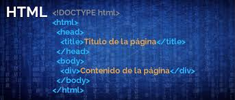

Aprendo html, Etiquetas Básicas de HTML,
atributos y valores
Proposito del sitio
Esta pagina web tiene como proposito, dar a conocer a sus visitantes, la importancia de las etiquetas basicas de HTML y los atributos y valores, las cuales son nuestras herramientas principales para empezar a desarrollar nuestra pagina web.
Etiquetas Básicas de HTML
Mediante el uso de las etiquetas HTML puedes subrayar textos, ponerlos en negrita, establecer encabezados, estructurar el texto en guiones, en párrafos, añadir imágenes y vínculos a otras páginas, etc. De ahí que el conocimiento de estas etiquetas sea importante para hacer páginas web, mejor dicho imprescindible.

Atributos y Valores
Los atributos de HTML son palabras especiales utilizadas dentro de la etiqueta de apertura, para controlar el comportamiento del elemento. Los atributos de HTML son un modificador de un tipo de elemento de HTML. Un atributo tampoco modifica la funcionalidad por defecto de un tipo de elemento o proporciona funcionalidad a ciertos tipos de elementos incapaces de funcionar correctamente sin ellos. En sintaxis HTML, un atributo se añade a una etiqueta de inicio de HTML.
Se han reconocido varios tipos de atributos básicos, incluyendo: atributos requeridos, necesitados por un tipo de elemento particular, para que aquel tipo de elemento funcione correctamente; atributos opcionales, utilizados para modificar la funcionalidad por defecto de un tipo de elemento; atributos estándares, soportados por muchos tipos de elementos; y (4) atributos de evento, utilizados para causar que los tipos de elemento especifiquen guiones o script para ser ejecutados bajo circunstancias concretas.
Algunos tipos de atributo funcionan de manera diferente, cuándo son utilizados para modificar diferentes tipos de elemento. Por ejemplo, el atributo name (nombre) se utiliza por varios tipos de elementos, pero tiene funciones ligeramente diferentes en cada uno.
Refrencias normas APA
Definicion de Etiquetas basicas de HTML, segun lawebera.es
HTML se basa en principalmente en etiquetas, que son como instrucciones para dar formato a las diferentes partes de una página web.
Definicion de Atributos HTML de Wikipedia
Los atributos de HTML son palabras especiales utilizadas dentro de la etiqueta de apertura.